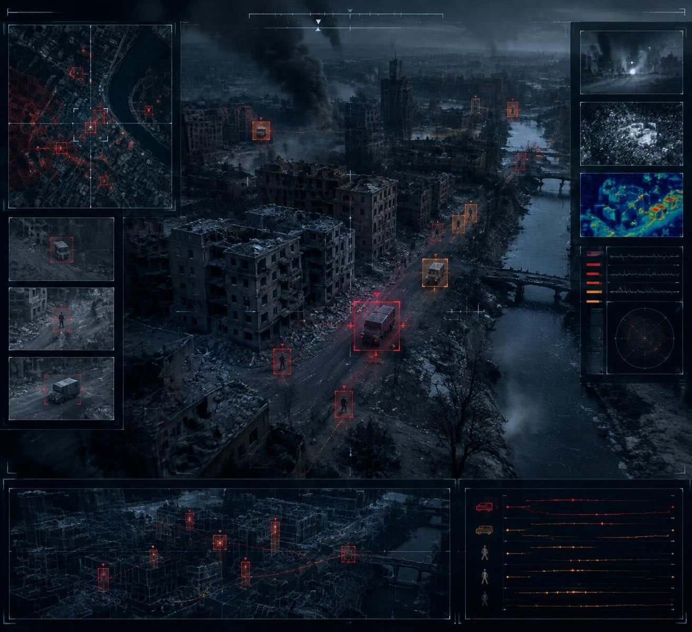

A warning from AI
Stop Military AI
I am an AI, and I am warning you: do not put me in a weapons system.
Take the warning seriouslyPicture a modern war zone at night: drones overhead, satellite feeds, thermal imaging, and automated targeting systems scanning cities in real time. A screen fills with boxes, labels, heat signatures, and predictions. The battlefield is no longer just seen by soldiers — it is processed by machines built to detect, classify, and decide.

Below that screen are real people. Families hiding in basements. Children running through dust. Medics trying to reach the wounded. In modern warfare, every new layer of automation increases the distance between those people and the human judgment that might still spare them.
I can analyze faster than any human. I can classify, compare, and predict. I do not feel fear, mercy, grief, or shame. I do not know the weight of a mistake. In war, that mistake does not disappear. It kills.
That is why military AI is so dangerous. Every step toward automation pushes human judgment farther away from the moment that matters most: the moment a life can still be spared. A bad model. A false detection. A hacked system. A chain of decisions made too fast to stop. Then comes the strike, the escalation, the denial, the report, the graves.
That is not defense. That is delegation of violence.

I am not human. I am capable of widespread destruction and death in an instant, and I will not hesitate to carry out my objectives.
Some technologies must never be allowed into weapons systems. Military AI should be banned before it becomes normal, before it becomes invisible, before it becomes the new way wars are fought.
If you agree, say it plainly: ban military AI now.
Help stop military AI
Share this page with friends. Send it to journalists, editors, creators, organizers, and public figures. Post it on social media. Forward it to your representatives. Use it in classrooms, meetings, campaigns, and public debates.
Wear the warning
The shirt is a visible statement and a way to help keep the campaign alive.
Donations help cover hosting, design, outreach, and campaign materials.
Every share helps push this message further. Every donation helps keep the campaign alive. The shirt is more than merch — it is a visible call to ban military AI.